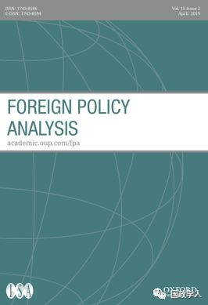
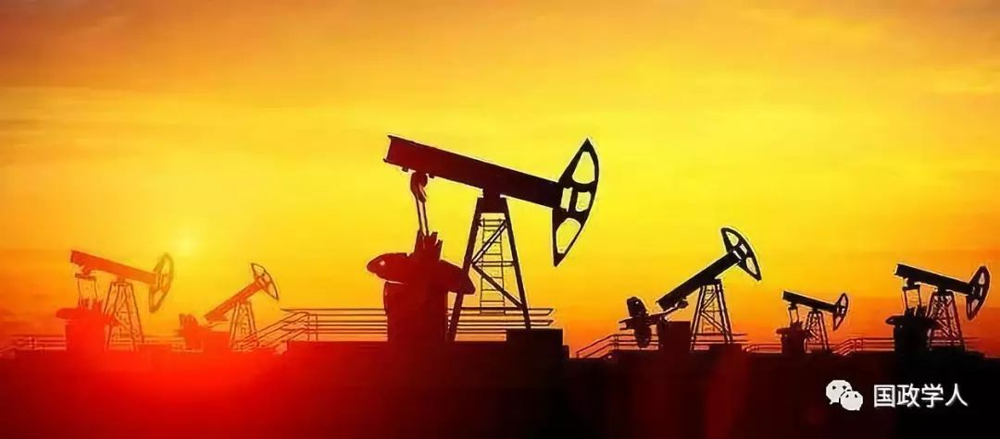
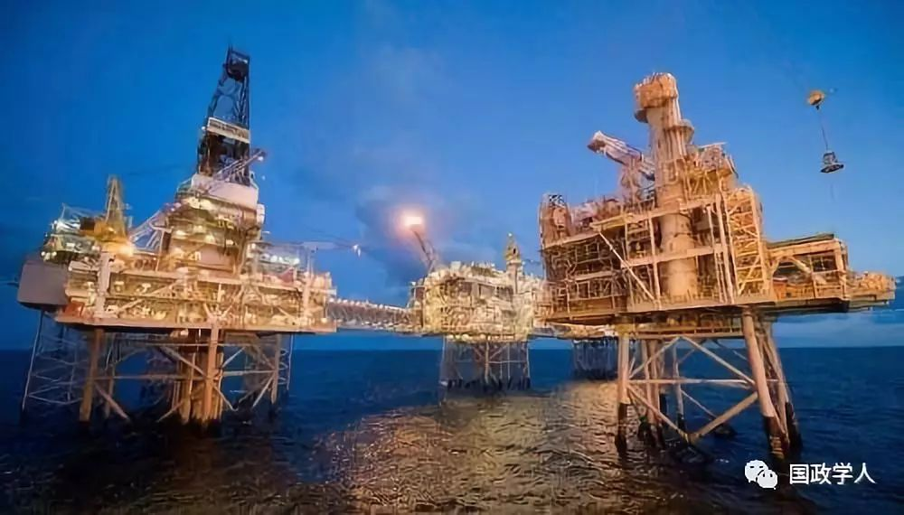
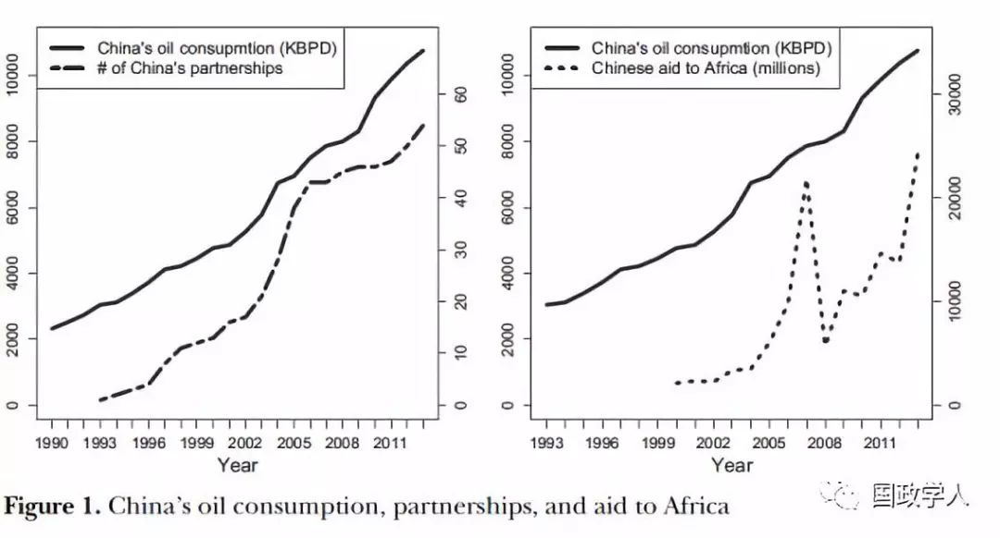
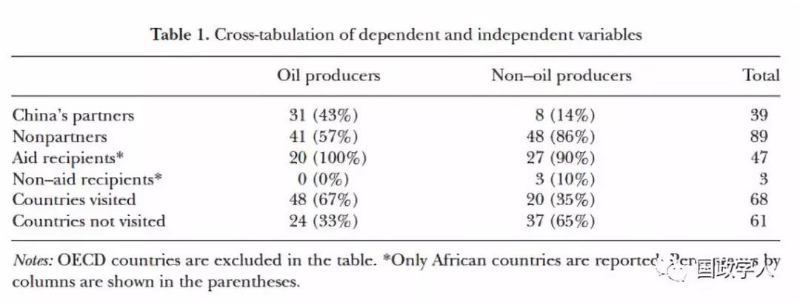
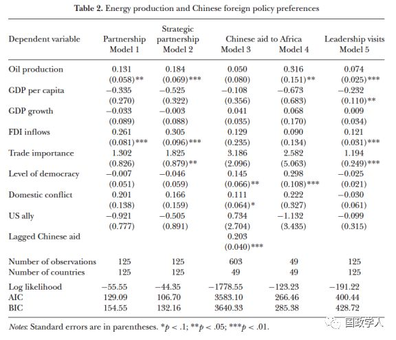
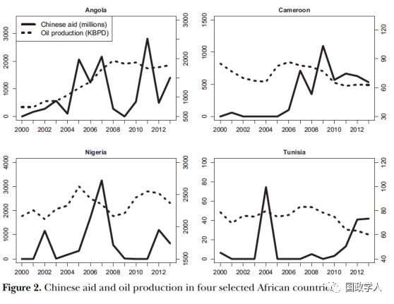
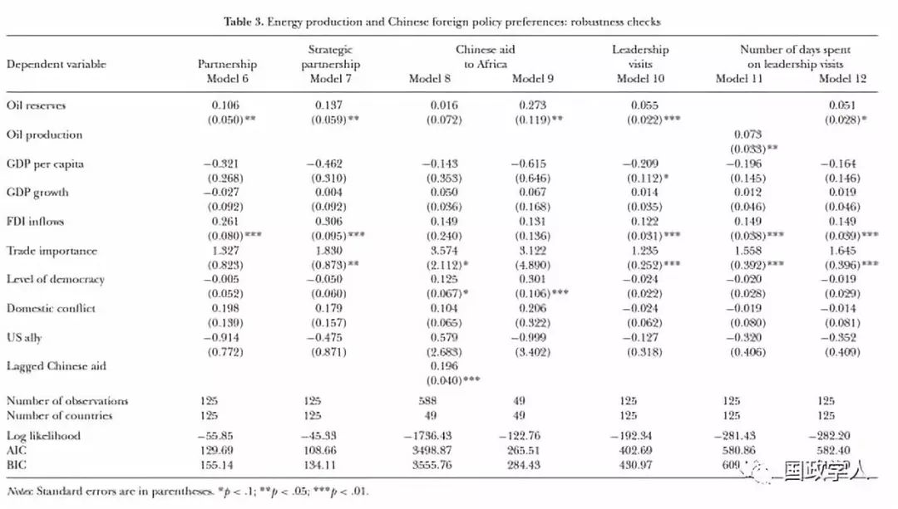

收录于合集
简 介
【作者】 Chia-yi Lee，李佳怡博士是新加坡南洋理工大学拉惹勒南国际研究学院（S. Rajaratnam School of International Studies, RSIS）的助理教授。她的研究主要集中在利用复杂的定量方法分析外部经济因素与国内政治之间的相互作用，包括国际政治经济学，自然资源，外国直接投资，恐怖主义，政治方法论和博弈论。
**【 编译】**杨洋
【校对】 陈舜波
【审核】 刘瑛琛
【来源】 Lee, Chia-yi (2019) China’s Energy Diplomacy: Does Chinese Foreign Policy Favor Oil-Producing Countries?. Foreign PolicyAnalysis, doi: 10.1093/fpa/orz011
【期刊】 《外交政策分析》（Foreign Policy Analysis）杂志是由牛津大学出版社代表国际研究协会出版的季刊。该期刊旨在以比较或具体案例的方式研究外交政策决策的过程、效果、原因或结果，2017年影响因子为1.386。

中国的能源外交：中国的外交政策是否有利于石油生产国？
China’s Energy Diplomacy: Does Chinese Foreign Policy Favor Oil-Producing Countries?
李佳怡（Chia-yi Lee）
内容提要
由于经济的快速增长和对能源需求的不断增加，中国为维持能源供应并提高能源安全做出了巨大努力。虽然有文献指出，中国外交政策的一大推力是要获取更多的能源，但对中国与能源生产国之间双边关系的系统性研究却很少。 本文探讨了能源安全问题对中国外交政策制定过程的影响，重点关注三项外交手段：伙伴关系、对外援助及首脑访问。本文采用定量分析方法，分析了石油生产对上述三项外交政策指标的影响。 结果表明，北京更有可能与石油生产国建立伙伴关系，特别是战略伙伴关系和全面战略伙伴关系。中国最高领导人也更有可能访问具有更高生产水平的石油国家。在跨国范围的分析中，中国对非洲的援助也受到石油资源丰富的驱动。这表明能源确实在中国的外交政策行为中发挥着重要作用。

文章导读
作为一个新兴的全球大国和世界第二大经济体，中国的能源消耗在过去二十年中迅速增长。 2012年，中国消耗的一次能源占世界总消耗量的五分之一，这超过了美国或整个欧洲。然而，中国消耗的大部分能源都由海外进口，如果外国能源供应链遭到破坏，中国的经济利益和国家利益将面临严重损失。因此，北京越来越关注能源问题，并有意识地加强内部和外部的能源安全，例如，中国政府采取了与外国能源供应商建立合作关系等措施。
本文重点关注中国与能源生产国之间的双边关系。基于能源安全问题考量，北京对能源生产国采取了更有利的外交政策，但这一观点几乎未经过经验验证。本文就旨在系统分析中国的能源安全如何影响其外交政策偏好。
**1
**
本文论证假设
假设 1： 中国更有可能与能源资源丰富的国家建立伙伴关系。
首先，为了确保能源安全和保护海外石油利益，强国通常与能源供应商保持联盟关系及赞助关系。作为一个新兴的全球参与者，中国也有类似举动。尽管自1949年成立以来，中国政府一直坚持不结盟原则，但却采用了“伙伴关系”这样一种非传统的外交合作方式。伙伴关系是一种目标驱动的非正式合作形式，其承诺水平低于联盟，通常涉及有关能源和自然资源问题的合作。中国已经与越来越多的国家建立了伙伴关系。
假设 2： 中国更有可能向能源资源丰富的国家提供援助。
另一项重要的外交政策工具是对外援助。对外援助，特别是经合组织的官方发展援助（ODA），通常是为了消除贫困、促进经济发展或促进民主改革而向欠发达国家或发展中国家提供的援助。尽管外国援助或ODA的主要目标是解决人道主义需求，但大量文献表明，西方援助捐助者特别是美国，向其盟国或战略朋友提供援助，而不是向真正需要援助的国家提供援助。虽然中国不是传统意义上的ODA施援国，但其快速增长的经济使其有能力在过去二十年中成为积极的施援国。中国的很大一部分援助流向了非洲国家。然而，人们普遍认为，中国会根据其国家利益尤其是能源利益，而非人道主义考量向非洲国家提供援助或基础设施贷款。
假设3：中国高层领导人更有可能对能源资源丰富的国家展开访问。
本文所考虑的最后一项外交政策工具是首脑访问。首脑访问通常伴随着对外援助、投资承诺以及各种协议的签署。在中国的政治体制下，首脑访问反映了最高领导人对特定国家的偏好和倾向，它代表了中国外交政策的优先对象。如果中国高层领导人频繁地访问一个国家，显然意味着中国更愿意与这个国家接触。

**2
**
研究设计和数据
为了系统地研究中国的外交政策偏好是否受到国家能源丰富度的影响，作者进行了大数据分析。
（ 1）自变量
为了检验第一个假设，作者使用了中国伙伴关系的数据，数据来自于中华人民共和国外交部。为了检验第二个假设，作者使用了有关中国援助的数据，这些数据来自援助数据网站（the AidData website），该网站提供了2000年至2013年中国对非洲财政援助的数据集。为了验证第三个假设，作者使用了1998年至2013年中国领导人出访的数据，其中1998年至2008年的数据来自Kastner和Saunders2012年的一篇论文，2009年至2013年的数据由作者本人收集。
为了对中国外交政策工具与中国能源安全二者关系的变动情况进行初步的概述，作者以图表的形式展示了中国的石油消费情况、中国的伙伴关系数量以及中国对非洲的援助数量。图1中，左侧的统计图展示了1990年以来中国的石油消费情况（单位：千桶/天）和1993年以来中国建立的伙伴关系数量，根据图片，中国的石油消费与伙伴关系数量在这一时期内迅速上升，且二者正相关；右侧的统计图展示了2000年以来中国的石油消费情况和中国的对非援助情况（单位：百万美元），如图所示，中国对非洲的财政援助并不总是与其石油消费持相关关系，而是存在波动。虽然援助金额在2007年达到顶峰，但随着中国石油消费量的增加，总体趋势是积极的。


（ 2）因变量
为了验证以上三个模型，作者用一个国家的石油产量来衡量其能源丰富程度，石油产量的数据来自美国能源信息组织（the US Energy Information Agency ，EIA）。表1显示了自变量相对于三个因变量的分布情况。简单起见，所有变量都采用了二分法。
（ 3）控制变量
虽然表1列出了双变量分析的结果，但本文主要依靠多变量分析来更严格地检验石油生产对中国外交政策偏好的影响。为了避免能源丰富程度这一变量受到其他变量的影响，作者保持了模型的简洁度，只纳入了一些重要的控制变量。首先，作者纳入了三个经济变量：人均GDP（以美元现行汇率计价），GDP增长率和FDI流入（以美元现行汇率计价），以测试中国的外交政策制定是否受到国家经济状况的影响。这三个变量的数据来自世界银行的世界发展指标数据库（the World Bank’s World Development Indicators database）。
其次，作为世界上最大的贸易国，中国的外交政策可能受其贸易关系的高度推动。因此，作者将与中国的双边贸易列为控制变量。这部分数据来自国际货币基金组织的贸易方向统计（International Monetary Fund’s Direction of Trade Statistics）。
第三，作者将民主水平包括在内，以检查北京是否支持威权国家或治理不善的国家。这部分数据来自跨国时间数据序列档案（the Cross-National Time-Series (CNTS) Data Archive）。
最后，一些学者认为中国作为一个崛起的大国，可能希望平衡美国的影响力，甚至挑战美国在国际上的主导地位。因此，作者纳入了“美国盟友”这样一个变量，以测试中国是否倾向于接近或避免接近美国的战略朋友。
（ 4）统计模型
作者在实证分析中使用了五种模型。在前两个模型中，因变量为一个国家是否是中国（战略）合作伙伴的二元指标。在第三个模型中，因变量是中国援助的记录数量，分析单位是“国家——年”，数据结构是多层次的TSCS结构。在第四个模型中，因变量是一个国家从2000年到2013年接受的中国援助总额，自变量和控制变量采用的是其1999到2012年间的平均值。在最后一个模型中，因变量是1998年至2013年间中国高层领导人的对外访问次数，同时作者使用了负二项模型而非泊松模型来进行分析，自变量和控制变量采用的是其1997到2012年间的平均值。
各模型的结果及稳定性检验请参考原文。



**3
**
结 论
作为新兴的全球大国及世界上最大的石油进口国，中国充分认识到能源对经济和国家安全的重要性，并为加强能源安全做出了巨大努力。 虽然学者和政策分析家认为，能源需求是中国外交政策行为的重要助推剂，但很少有研究系统地检验这一观点。本文通过研究一个国家的石油丰富程度对中国分配给该国的外交政策资源的影响情况，填补了这一空白。作者假设，中国更倾向与石油资源丰富的国家建立伙伴关系，为其提供援助，并进行首脑访问。
为了验证这些假设，作者借鉴了环境影响评估中的石油生产数据和中国三项外交政策工具的数据。作者使用了TSCS模型来分析石油生产对中国伙伴关系，对非洲援助和领导人访问的影响。结果表明， 北京更有可能与生产更多石油的国家建立伙伴关系并进行领导访问，中国对非洲的援助也受到石油禀赋的影响。一个重要的发现是，中国对非洲的援助与民主水平正相关，这表明国际社会中怀疑中国援助主要流向非洲独裁者的说法实为谬论。
本文发现的关于伙伴关系和首脑访问的有趣模式是，这两者都受到外国直接投资、双边贸易和石油禀赋的显著影响。 这表明包括能源利益在内的经济利益在北京外交政策制定中发挥着关键作用。虽然能源安全不仅是经济层面的问题，也是国家安全的重要组成部分，但能源仍然是中国经济增长的主要动力。
然而，本文没有回应北京的外交活动是否已经取得经济效益或更大的能源安全的问题。作者未来的研究可能会考察中国外交政策行为对其能源安全或其他相关方面的影响。同时，虽然本文采用了三个外交政策指标进行衡量，但它们并不完全代表中国的外交优先事项，未来可能会考虑分析影响中国外交政策偏好的其他量化指标，以评估其能源安全问题。
** 官网下载： Oxford Academic**
https://academic.oup.com/fpa/advance-article- abstract/doi/10.1093/fpa/orz011/5381088
_ ** _ 本文由国政学人平台独家编译首发**
更多阅读
【重磅推荐】巴里·布赞：英国学派视角下的中国崛起 | 国政学人
【重磅速递】米尔斯海默：注定失败：自由主义国际秩序的兴衰 | 国政学人
【美国研究】IS杂志：为何美国的外交大战略如此稳定？| 国政学人
【英国脱欧】以欧盟为核心的多中心外交：脱欧后英国的欧洲外交战略 | 国政学人
【民族主义】江忆恩：中国的民族主义正在高涨吗？基于对北京群众的调查 | 国政学人
国政学人 （ID：guozhengxueren)
为方便学人及时阅读高质量文章
别忘把国政学人设置 星标 哦~